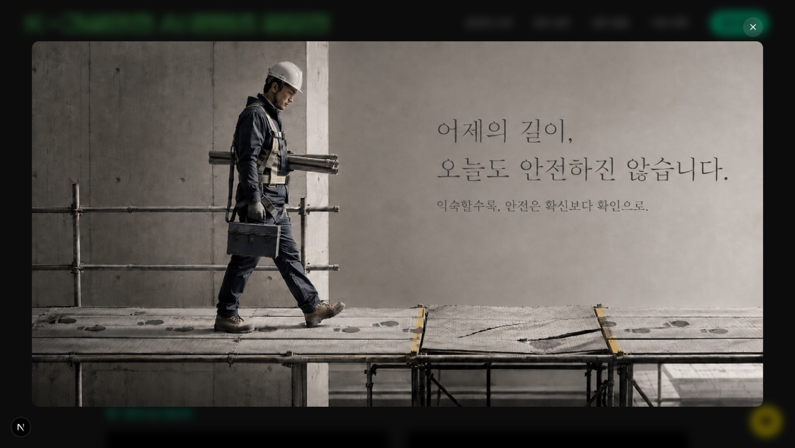

Full-Stack Developer
개발부터 배포까지,
혼자 끝냅니다.
시안을 주시면, 살아 움직이는 서비스로 구현합니다.
개발과 배포, 운영까지 한 사람이 처음부터 끝까지 책임집니다.
What you get
맡기면, 이렇게 나옵니다.
시안 그대로의 완성도
디자인을 픽셀 단위로 구현합니다. '비슷하게'가 아니라, 의도한 그대로.
모든 화면에서
모바일·태블릿·데스크톱, 어디서 열어도 깨지지 않는 반응형.
검색과 분석까지
검색엔진 노출(SEO)과 방문자 분석(GA)을 처음부터 세팅합니다.
배포 후에도
실서비스 배포와 이후 운영·수정까지 이어서 대응합니다.
Selected work
K-건설안전 AI 콘텐츠 공모전
국토교통부 · 국토안전관리원 공식 공모전 웹사이트
- 역할
- 개발 · 배포 · 운영
- 클라이언트
- 국토교통부 · 국토안전관리원
- 유형
- 공모전 공식 웹사이트
- 스택
- Next.js · React · TypeScript · Tailwind
- 도메인
- ai-kalis.com
공모 안내부터 국민 참여, 수상 후보작 공개·검증까지 담긴 공식 사이트를 직접 개발했습니다. 영상·이미지 수상작을 직접 감상하는 갤러리, 출품자 개인정보 보호, 검색 노출까지 실제 서비스 수준으로 완성했습니다.
Why it matters
정부기관 공식 사이트
국토교통부·국토안전관리원의 공식 공모전 웹사이트로 만들었습니다. 공공기관이 실제로 채택해 대외 공개한 서비스입니다.
혼자, 처음부터 끝까지
설계된 기획을 받아 개발·배포·운영을 한 사람이 단독으로 맡았습니다. 여러 곳에 나눠 맡길 필요 없이 끝까지 책임집니다.
실제로 운영된 서비스
공모 기간 동안 국민을 대상으로 접수·공개검증·결과 공개까지 돌아간 실서비스입니다.
서버에서 지킨 개인정보
출품자 실명을 서버에서 가려, 화면뿐 아니라 페이지 소스에도 남지 않게 처리했습니다. 공공 서비스의 기본기입니다.
Screens
메인 화면 — 배경 영상이 자동 재생됩니다

수상 후보작 페이지 — 스크롤해 보세요

모바일 대응 — 스크롤해 보세요
스크롤에 따라 나타나는 화면
클릭하면 확대 재생되는 영상

원본을 크게 보는 이미지
국토교통부 · 국토안전관리원 공식 사이트로 공모 기간 동안 운영되었습니다.